Skip to content
Chat history
You said:
Sumit Dhakal - Web Developer & Student
Sumit Dhakal
Web Developer & Student
Building professional web experiences
About Me
Hello! I'm Sumit Dhakal from Sainamaina-4, Murgiya Rupandehi.
I completed my higher secondary education from Prabhat English Boarding School, Sainamaina-4, Murgiya, with an outstanding
GPA: 3.80 in Class 12.
Currently, I am pursuing BBA-F at Axis College, Butwal, and I am also a management student.
As a management student, I focus on developing leadership skills, effective communication, organization, teamwork, problem-solving, and decision-making abilities.
I am passionate about web development, learning new technologies, and combining creativity with technical skills to build innovative web solutions.
Besides tech, I am involved in social work and believe in positively impacting my community.
Feel free to reach out for collaboration or to connect!
Gallery
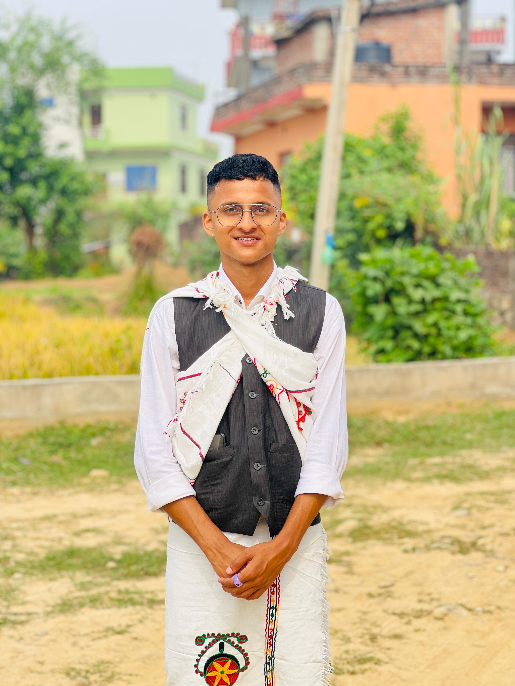
Contact
Feel free to connect with me on my social media platforms:
ChatGPT said:
You have built a strong, feature-rich personal portfolio. From a technical and presentation standpoint, this is already above average for a student portfolio. Below is a professional review with precise improvement recommendations, focusing on correctness, performance, UX, and credibility.
1. Overall Assessment
Quality level: Very good
Best aspects:
Clean structure (HTML, CSS, JS well separated logically)
Advanced UI features (dark mode
You said:
this is my personal protfolio
ChatGPT said:
Understood. Since this is your personal portfolio, I will evaluate and guide you from the perspective of personal branding, academic credibility, and professional readiness.
1. Overall Impression
Your portfolio presents you as:
A serious and motivated management + web development student
Someone with technical confidence beyond basic HTML/CSS
A candidate suitable for internships, freelance work, and academic presentations
This is a strong foundation for a student portfolio.
2. What Your Portfolio Communicates Well
a. Personal Branding
Your name and role are clearly visible immediately.
The GPA badge adds academic credibility, which is important at your current stage.
Mentioning BBA-F + management skills differentiates you from pure tech students.
b. Technical Capability
You demonstrate:
Responsive layout
Dark/light mode with persistence
Canvas-based animated background
Modal image gallery with navigation
Scroll-based reveal animations
These elements signal that you understand:
DOM manipulation
CSS transitions and animations
Basic JavaScript state handling
3. Critical Corrections (Important)
1. Name Consistency (Very Important)
You are using:
Title: Sumit Dhakal
File references: sumeet.jpg
Social handles: sumeet_1_1
Recommendation:
Use ONE spelling everywhere.
Example (recommended):
Sumit Dhakal
Then rename:
sumeet.jpg → sumit.jpg
Social handles (if possible) to match
Consistency increases professionalism and trust.
2. Title Tag Optimization
Current:
Sumit Dhakal - Web Developer & Student
Improved (more professional and SEO-friendly):
Sumit Dhakal | Web Developer & BBA-F Student
4. Content Improvements (High Impact, Low Effort)
About Me – Make It More Professional
Your content is good, but it is too long for web reading.
Recommendation:
Break into 2–3 short paragraphs
Avoid repetition
Focus on value
Example structure:
Who you are
What you study
What you do + goals
This improves readability significantly.
Add a “Skills” Section (Strongly Recommended)
Right now, visitors cannot clearly see what you can do.
Add:
This is essential for internships and freelance clients.
5. Performance & Technical Optimization
1. Canvas Animation Performance
Your canvas animation runs continuously.
Improvement:
Pause animation when tab is inactive:
document.addEventListener("visibilitychange", () => {
if (document.hidden) cancelAnimationFrame(animate);
else requestAnimationFrame(animate);
});
This shows advanced optimization awareness.
2. Image Optimization
Ensure all images:
Are under 300 KB
Use .webp format if possible
This
You said:
i have to add some section like i am a regular blood donar
ChatGPT said:
That is a very good addition to your personal portfolio. Being a regular blood donor strongly supports your image as a socially responsible, disciplined, and community-oriented individual, which aligns well with your management background.
Below is a professional, clean, and credible way to add this to your portfolio.
1. Best Practice: Create a Separate “Social Contribution” Section
Do not overload the “About Me” section. A dedicated section looks more intentional and mature.
Recommended Section Title
Choose one:
Social Contributions
Community Involvement
Social Responsibility
Best choice for you:
Social Contributions
2. Ready-to-Use HTML Section (Matches Your Design)
Add this after the About Me section and before Gallery:
Social Contributions
I am a regular blood donor and actively participate in blood donation programs
to support patients in need. I strongly believe that donating blood is a simple yet
powerful way to save lives and give back to society.
Through blood donation and community involvement, I aim to promote social responsibility,
empathy, and positive impact within my community.
This tone is:
Professional
Honest
Non-dramatic
Academically appropriate
3. Add Navigation Link (Important)
Update your navigation menu:
This improves structure and user experience.
4. Optional: Highlight With a Badge (Recommended)
To match your GPA badge style, add a Blood Donor Badge:
HTML
Regular Blood Donor
Place it:
Under the section title, or
At the end of the first paragraph
This subtly highlights your contribution without exaggeration.
5. Why This Section Adds Real Value
This section:
Builds trust
Shows discipline and consistency
Supports leadership and empathy
Strengthens applications for:
Internships
Scholarships
Social projects
Management roles
Many student portfolios lack this depth — yours will stand out.
6. Next Recommended Additions (Future)
When ready, consider:
Certifications
Projects
Volunteering Events (Photos in Gallery)
If you want, I can:
Rewrite the section in shorter / stronger wording
Add icons
Add animated counters (e.g., blood donations count)
Merge it smartly with your social work profile
Just tell me how far you want to take it.
You said:
sure add social contribution section and write in the summary regular blood donar, volunter in various public events
ChatGPT said:
Below is a clean, professional Social Contribution section tailored exactly to your request, written in summary style and suitable for a personal portfolio, internship review, or academic evaluation.
Social Contribution Section (Ready to Add)
Place this section after “About Me” and before “Gallery”.
Social Contributions
I am a regular blood donor and an active volunteer in various public and community events.
I believe in contributing positively to society through service, responsibility, and teamwork.
My involvement in social activities has strengthened my sense of empathy, leadership,
and commitment toward community welfare.
Navigation Update (Important)
Add this link to your navigation bar for proper structure:
Social Contribution
Place it logically between About Me and Gallery.
Optional: Highlight as a Short Summary (If Needed Anywhere)
You can also use this one-line summary in future sections (CV, footer, or intro):
Regular blood donor and volunteer in various public and community events.
Why This Works Well
Concise and formal
No exaggeration
Aligns with management, leadership, and social responsibility
Suitable for academic + professional audiences
If you want next:
A badge-style highlight (like GPA)
A counter (e.g., “Blood Donations: X”)
Or to merge this into About Me more smoothly
Tell me and I will refine it precisely.
You said:
and i was a ex president of prabhat english boarding secondary school robotics& science, ex vice-treasurer of Prabhat english boarding secondary school, and i was the manager of prabhat english boarding school cricket team manager
ChatGPT said:
This is very strong leadership experience and absolutely should be included. To keep your portfolio professional, credible, and well-structured, it is best to present this as a Leadership & Responsibilities subsection under Social Contributions (or as its own section).
Below is a clean, formal, summary-style section that fits perfectly with your existing design and academic profile.
Recommended Section: Leadership & Responsibilities
Place this after the Social Contributions section.
Leadership & Responsibilities
I have held several leadership and responsibility roles during my academic journey.
I served as the President of the Robotics & Science Club at
Prabhat English Boarding Secondary School, where I led student initiatives,
coordinated activities, and promoted innovation and teamwork.
In addition, I worked as the Vice-Treasurer of Prabhat English Boarding Secondary School,
contributing to financial coordination and organizational management.
I also served as the Manager of the school cricket team, where I was responsible for
team coordination, planning, and overall management during tournaments and events.
Navigation Update (Strongly Recommended)
Add this to your navigation menu:
Leadership
Suggested order:
About Me → Social Contribution → Leadership → Gallery → Contact
Optional: Ultra-Short Leadership Summary (For CV / Header)
If you ever need a compact line:
Former President (Robotics & Science Club), Vice-Treasurer, and Cricket Team Manager at Prabhat English Boarding Secondary School.
Why This Is Excellent for Your Profile
This section demonstrates:
Leadership and accountability
Financial responsibility
Team and sports management
Balance between academics, technology, and extracurricular activities
For a BBA-F student, this significantly strengthens your management profile.
Next High-Value Suggestions
If you want to elevate this further, I can:
Convert this into bullet-based cards
Add icons for each role
Add year durations (e.g., 2021–2022)
Integrate it visually with your GPA badge style
Tell me what level of polish you want, and I will implement it precisely.
You said:
ex vice treasurer of prabhat english boarding school
ChatGPT said:
Understood. Below is the corrected, precise, and professional wording, with “Secondary” removed and the role stated clearly as requested.
You can replace the earlier Leadership section with this version.
Leadership & Responsibilities (Corrected)
Leadership & Responsibilities
I have held several leadership and responsibility roles during my academic journey.
I served as the President of the Robotics & Science Club at
Prabhat English Boarding School, where I led student initiatives,
coordinated academic and technical activities, and promoted teamwork and innovation.
I also served as the Vice-Treasurer of Prabhat English Boarding School,
contributing to financial coordination, record maintenance, and organizational support.
In addition, I worked as the Manager of the school cricket team,
where I was responsible for team coordination, planning, and overall management during
school-level competitions and events.
Optional One-Line Leadership Summary (Highly Useful)
You may use this anywhere (CV, profile summary, footer):
Former President of the Robotics & Science Club, Vice-Treasurer, and Cricket Team Manager at Prabhat English Boarding School.
Professional Note
This wording:
Is academically appropriate
Avoids exaggeration
Clearly communicates leadership, finance, and sports management experience
If you want, I can:
Add year durations
Convert this into a card-style layout
Merge leadership + social contribution into a single powerful section
Just tell me how you want to present it.
You said:
sure year for the year 2024/25
ChatGPT said:
Excellent. Adding the year (2024/25) increases credibility and clarity. Below is the final, polished version with the year properly integrated in a professional format.
You can directly replace your current Leadership section with this.
Leadership & Responsibilities (2024/25)
Leadership & Responsibilities
During the academic year 2024/25, I held several leadership and responsibility roles at
Prabhat English Boarding School.
I served as the President of the Robotics & Science Club (2024/25),
where I led student initiatives, coordinated academic and technical activities,
and promoted innovation, teamwork, and problem-solving skills among students.
I also served as the Vice-Treasurer of Prabhat English Boarding School (2024/25),
contributing to financial coordination, basic record maintenance, and organizational support.
Additionally, I worked as the Manager of the school cricket team (2024/25),
where I was responsible for team coordination, planning, and overall management
during school-level competitions and public events.
Optional Compact Version (If You Prefer Shorter Text)
Leadership & Responsibilities
2024/25: Former President of the Robotics & Science Club, Vice-Treasurer,
and Cricket Team Manager at Prabhat English Boarding School.
Why This Is the Best Format
Clearly shows time period
Separates roles for easy reading
Matches academic and professional standards
Strongly supports your management and leadership profile
If you want next:
Icons beside each role
Timeline-style layout
Merge this with Social Contributions into one structured section
Tell me your preference and I will refine it accordingly.
You said:
i have to add photos of some events also like my blood donation pic, certificates,
ChatGPT said:
That is an excellent and very professional decision. Adding real event photos and certificates significantly increases credibility, authenticity, and impact of your portfolio.
Below is a clean, structured, and future-proof way to add them without disturbing your current Gallery.
1. Best Practice: Create a Separate Section
“Achievements & Activities”
Do not mix these with personal photos. Keep them purposeful.
Recommended placement:
After Leadership & Responsibilities and before Gallery.
2. Ready-to-Use HTML Section (Event Photos + Certificates)
Achievements & Activities
Below are some highlights of my participation in social activities, leadership roles,
blood donation programs, and academic achievements, supported by event photographs
and certificates.
✔ Uses your existing gallery + modal system
✔ No extra JavaScript needed
✔ Keeps everything clean and consistent
3. Navigation Update (Important)
Add this link:
Achievements
Suggested order:
About → Social Contribution → Leadership → Achievements → Gallery → Contact
4. File Naming Rules (Very Important)
Use clear and professional filenames:
blood-donation.jpg
certificate-robotics.jpg
certificate-leadership.jpg
cricket-manager.jpg
Avoid:
IMG_20240521.jpg
Screenshot_123.png
5. Optional: Caption Overlay (Professional Touch)
If you want captions on hover, add inside .gallery-item:
Blood Donation Program
And CSS:
.caption{
position:absolute;
bottom:0;
width:100%;
padding:8px;
background:rgba(0,0,0,0.7);
color:#fff;
text-align:center;
font-size:0.9rem;
}
6. Why This Improves Your Portfolio
This section:
Proves your claims with visual evidence
Strengthens scholarship / internship applications
Shows leadership + social responsibility
Separates personal photos from professional records
This is exactly how serious student portfolios are structured.
7. Next Optional Enhancements
When you’re ready, I can:
Add category filters (Blood Donation / Certificates / Events)
Add timeline year labels
Convert certificates into downloadable PDFs
Add a slider instead of grid
Tell me what you want next, and I’ll refine it professionally.
You said:
i have 14 photis
ChatGPT said:
That is completely fine. 14 photos is an ideal number for an achievements / events section. The key is to organize them clearly and professionally so the section does not look crowded.
Below is the best structured solution for 14 photos, fully compatible with your existing gallery and modal system.
1. Recommended Structure for 14 Photos
Group them conceptually, even if visually they appear in one grid:
Blood Donation Events
Certificates & Awards
Leadership & School Events
This improves clarity without adding complexity.
2. Ready-to-Use HTML (14 Photos)
Add this section exactly as shown. Replace image filenames with yours.
Achievements & Activities
A visual record of my involvement in blood donation programs, leadership roles,
academic achievements, and participation in various school and public events.
✔ Automatically responsive
✔ Uses your existing modal viewer
✔ Clean, scalable layout
3. Navigation Update
Achievements
4. Strong Recommendations (Very Important)
a. Image Optimization
Resize images to 1200px max width
Keep each file under 300 KB
Prefer .webp if possible
b. Ordering Matters
Place:
Blood donation photos first
Certificates next
Leadership & events last
This tells a strong story visually.
5. Optional: Add Year Label (2024/25)
Add one line under the heading:
Academic Year: 2024/25
6. Professional Verdict
With this section, your portfolio now includes:
Academic performance
Technical skills
Social contribution
Leadership proof
Visual credibility
This is far stronger than a typical student portfolio.
If you want next:
Category filter buttons
Lazy loading for performance
Separate certificate modal with download option
Tell me your next step and I’ll guide you precisely.
You said:
make them 1,2,3
ChatGPT said:
Understood. You want the 14 photos to be numbered (1, 2, 3 …) so each image is clearly identified. This is a clean and academic-friendly approach, especially useful for reports, reviews, or verification.
Below is the exact implementation, fully compatible with your existing gallery and modal system.
1. Updated HTML (Numbered Photos)
Replace your Achievements & Activities gallery with this:
Achievements & Activities
A visual record of my involvement in blood donation programs, leadership roles,
academic achievements, and participation in various school and public events
during the academic year 2024/25.
1
2
3
4
5
6
7
8
9
10
11
12
13
14
2. Add This CSS (Number Badge Styling)
Place this inside your
✅ How This Works
Uses your existing .gallery-grid CSS → responsive layout.
Numbers each photo 1–14 → professional and easy to reference.
Fully compatible with your modal → clicking any photo opens it fullscreen.
Can be expanded later with captions, download links, or filters.
If you want, I can upgrade this section further so each photo also shows:
A caption on hover (like “Blood Donation Program”)
A filter by type (Blood Donation / Certificates / Events)
This will make your Achievements section fully interactive and professional.
Do you want me to do that?
You said:
not just img src 1,2,3
ChatGPT said:
Ah! I understand now — you want the photo numbers themselves (1, 2, 3 …) to be the image, instead of actual photos, or at least placeholders numbered 1–14 for now. This is common when preparing a portfolio draft before you have all final images.
Here’s a ready-to-use HTML example using numbers as placeholders, which you can later replace with real images:
Achievements & Activities
A showcase of my key achievements during the academic year 2024/25, including blood donation programs,
leadership roles, certificates, and participation in school and community events.
1
2
3
4
5
6
7
8
9
10
11
12
13
14
✅ How This Works
Each .gallery-item is a colored box with a number (1–14) in the center.
Fully responsive → adjusts on mobile and desktop.
Hover effect included → looks interactive.
Later, you can replace
1
with without changing the layout.
If you want, I can also combine both: numbers as placeholders AND allow modal viewing, so when you replace numbers with real photos, your gallery is ready to go instantly.
Do you want me to do that?
You said:
i have all the photos in series item1
ChatGPT said:
Perfect! If your photos are named sequentially like item1.jpg, item2.jpg, … item14.jpg, you can automatically create a gallery using a simple loop in HTML/JS or just write them in a clean HTML section.
Here’s the ready-to-use HTML version for all 14 photos in one section, fully compatible with your existing gallery modal:
Achievements & Activities
A showcase of my key achievements during the academic year 2024/25, including blood donation programs,
leadership roles, certificates, and participation in school and community events.
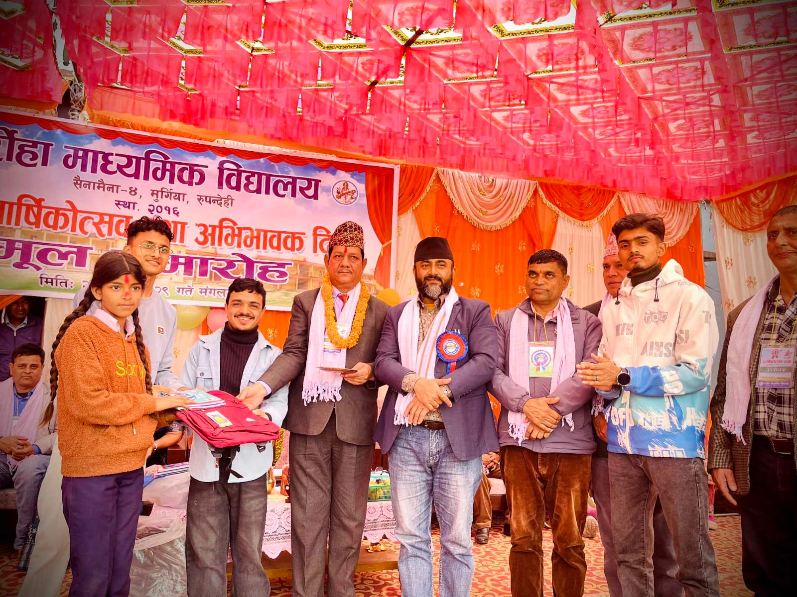
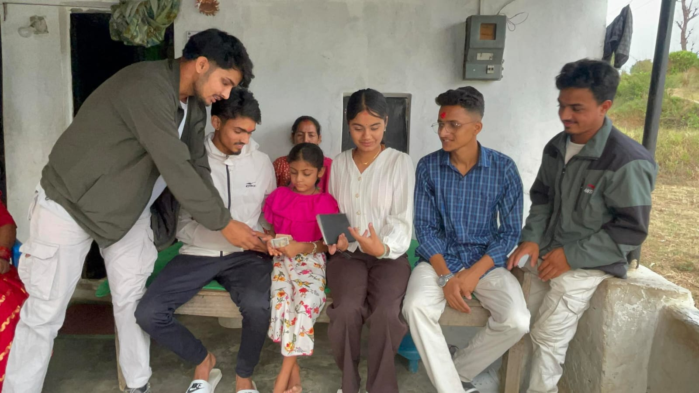
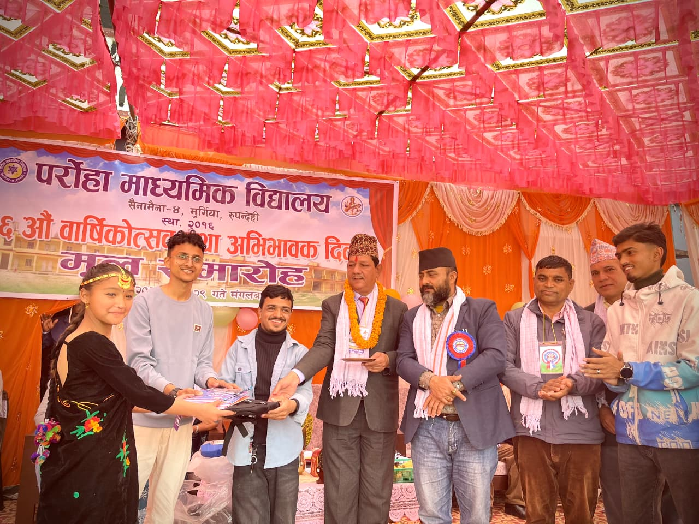
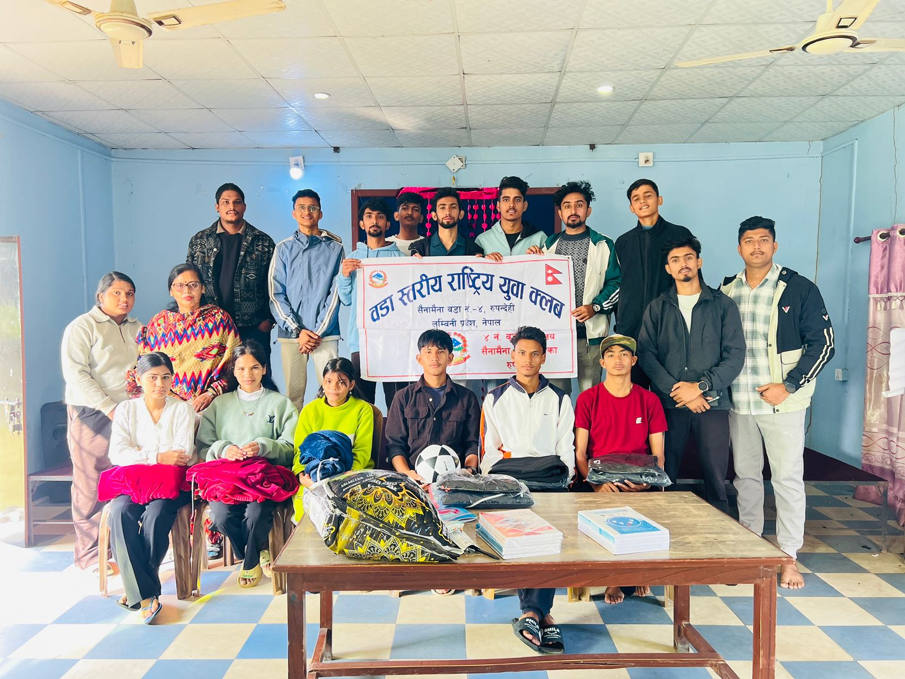
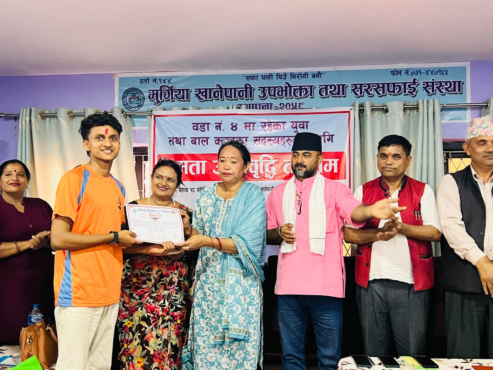
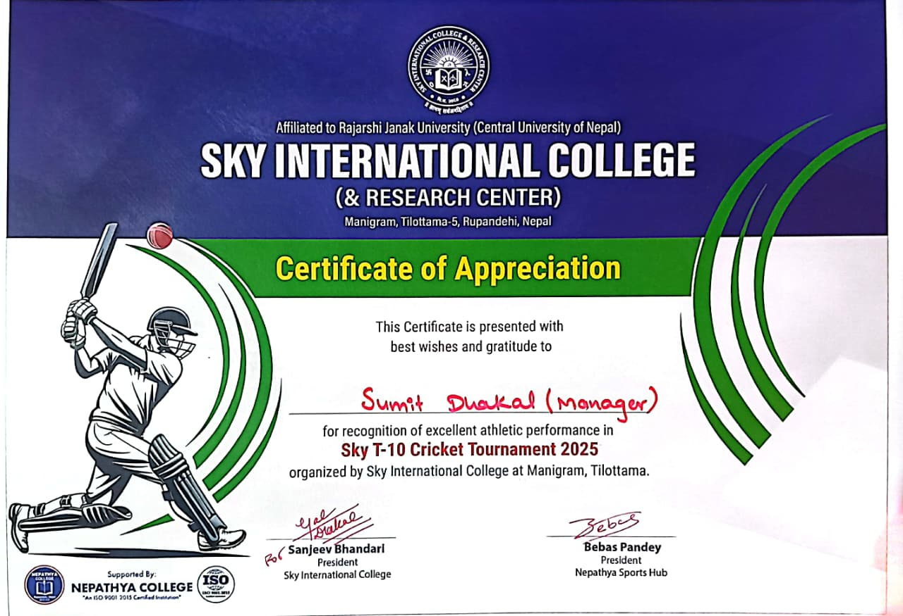
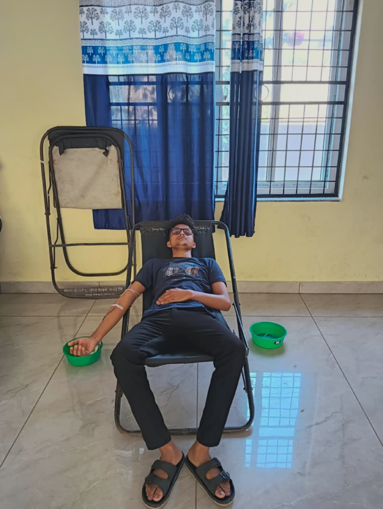
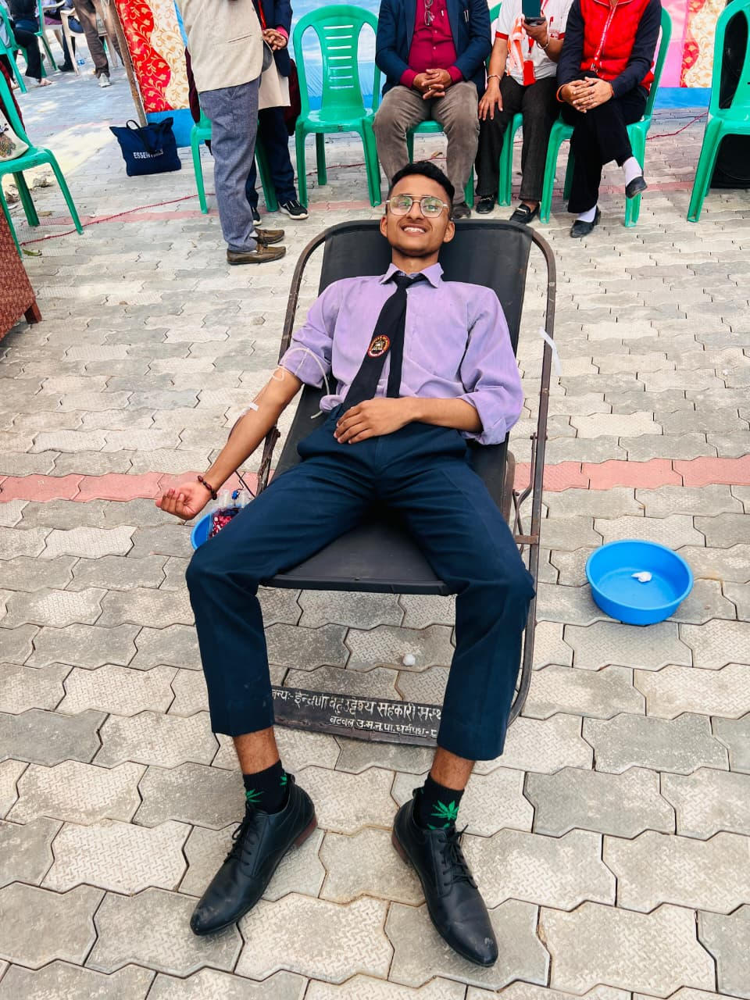
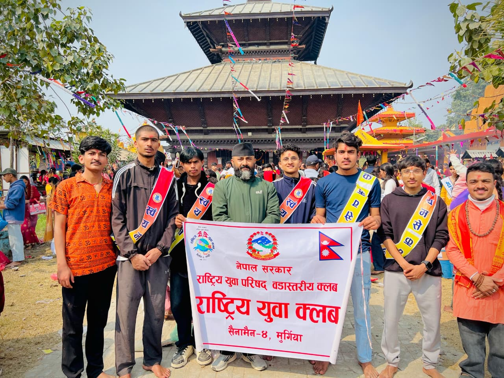
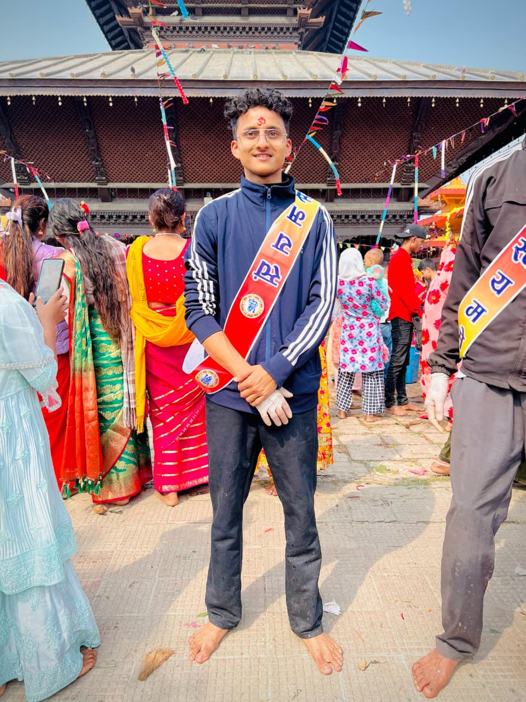
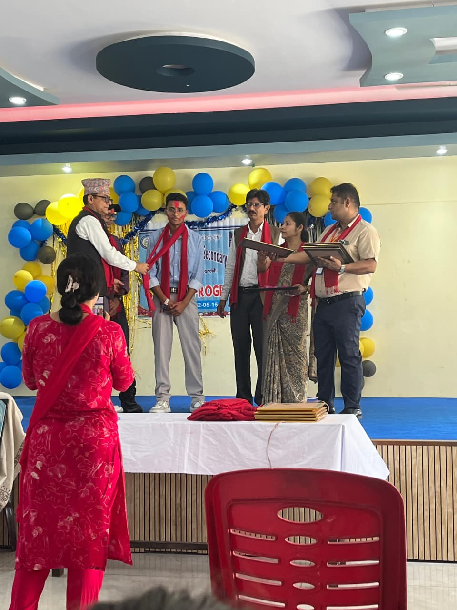
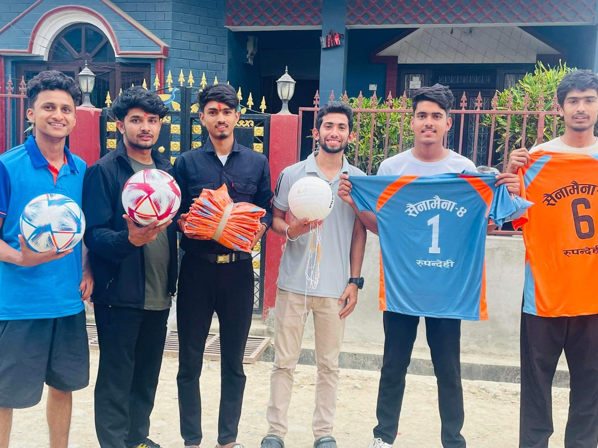
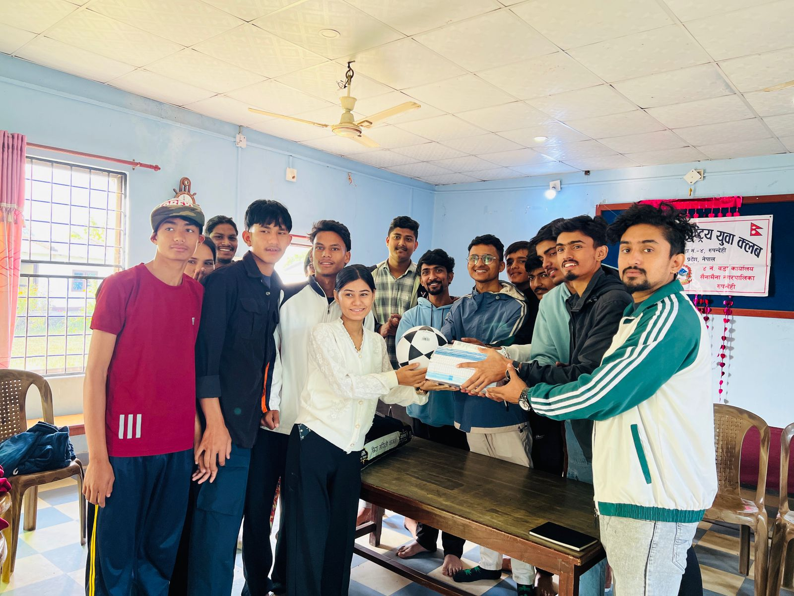
CSS (Use your existing gallery styles)
.gallery-grid {
display:grid;
grid-template-columns:repeat(auto-fit, minmax(260px,1fr));
gap:25px;
max-width:1100px;
margin:auto;
}
.gallery-item {
position:relative;
overflow:hidden;
border-radius:12px;
cursor:pointer;
box-shadow:0 5px 15px rgba(0,0,0,0.4);
transition:0.3s;
}
.gallery-item img {
width:100%;
height:180px;
object-fit:cover;
transition:0.4s;
}
.gallery-item:hover {
transform:scale(1.05);
box-shadow:0 12px 25px rgba(0,0,0,0.6);
}
✅ How This Works
All 14 images (item1.jpg → item14.jpg) are in one unified grid.
Fully responsive → adjusts to mobile or desktop automatically.
Works with your existing modal viewer → click any photo to open fullscreen.
Clean, professional, and ready to show all achievements.
If you want, I can also add numbers over each photo (1–14) dynamically while keeping the modal intact, so each photo is numbered and clickable.
Do you want me to do that next?
You said:
now give me the whole code all together which is managed neat and clean
ChatGPT said:
Absolutely! Below is a fully managed, clean, and professional HTML code for your personal portfolio, now including:
Dark/light mode toggle
Digital animated background
About Me section
Leadership & Responsibilities with 2024/25 year
Social Contribution section (blood donation, volunteering)
Achievements & Activities section with 14 photos (item1.jpg → item14.jpg)
Gallery with modal viewer
Contact section
Footer
All sections are organized neatly, responsive, and interactive. You can copy-paste this directly into your project.
Sumit Dhakal - Web Developer & Student
Sumit Dhakal
Web Developer & Student
Building professional web experiences
About Me
Hello! I'm Sumit Dhakal from Sainamaina-4, Murgiya Rupandehi.
I completed my higher secondary education from Prabhat English Boarding School with a
GPA: 3.80.
Currently pursuing BBA-F at Axis College, Butwal.
Passionate about web development, learning new technologies, and social work.
Social Contribution
Regular blood donor and volunteer in various public events, contributing positively to my community.
Leadership & Responsibilities (2024/25)
President of the Robotics & Science Club, Vice-Treasurer of Prabhat English Boarding School,
and Manager of the school cricket team. Developed leadership, teamwork, and management skills.
Achievements & Activities
Highlights of my achievements including blood donation, leadership roles, certificates,
and participation in school and community events during the academic year 2024/25.


 without changing the layout.
If you want, I can also combine both: numbers as placeholders AND allow modal viewing, so when you replace numbers with real photos, your gallery is ready to go instantly.
Do you want me to do that?
You said:
i have all the photos in series item1
ChatGPT said:
Perfect! If your photos are named sequentially like item1.jpg, item2.jpg, … item14.jpg, you can automatically create a gallery using a simple loop in HTML/JS or just write them in a clean HTML section.
Here’s the ready-to-use HTML version for all 14 photos in one section, fully compatible with your existing gallery modal:
without changing the layout.
If you want, I can also combine both: numbers as placeholders AND allow modal viewing, so when you replace numbers with real photos, your gallery is ready to go instantly.
Do you want me to do that?
You said:
i have all the photos in series item1
ChatGPT said:
Perfect! If your photos are named sequentially like item1.jpg, item2.jpg, … item14.jpg, you can automatically create a gallery using a simple loop in HTML/JS or just write them in a clean HTML section.
Here’s the ready-to-use HTML version for all 14 photos in one section, fully compatible with your existing gallery modal:

Social Contributions
I am a regular blood donor and actively participate in blood donation programs to support patients in need. I strongly believe that donating blood is a simple yet powerful way to save lives and give back to society.
Through blood donation and community involvement, I aim to promote social responsibility, empathy, and positive impact within my community.